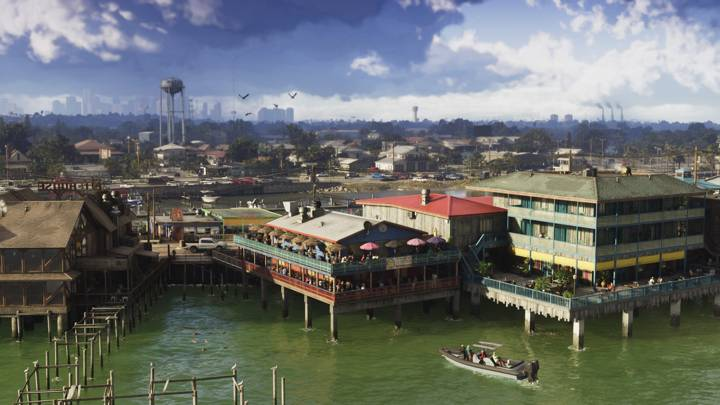
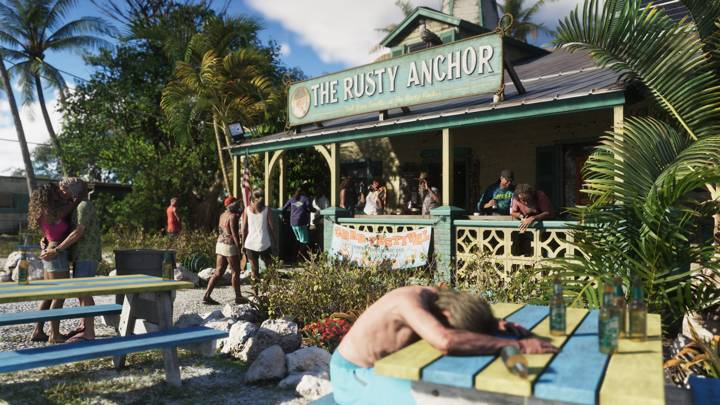
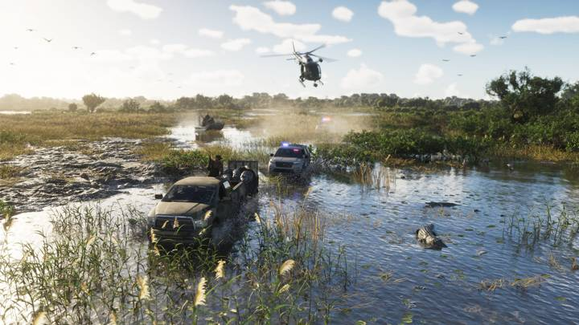
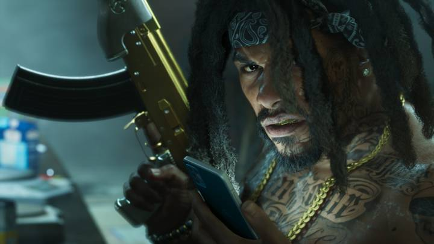

GTA 6 на русском — новости, слухи и справочник
Леонида ждёт.
Новости, слухи, разборы и справочник по GTA 6 на русском языке — каждый день.
До выхода GTA 6 · 19 ноября 2026
–дней
–часов
–минут
–секунд
Форматы
Сводка дняВсё главное о GTA 6 за суткиСводка дня: 26 сентября 2026
Слух или правдаПроверяем слухи и сливыСлух: у GTA 6 будет коллекционное издание
Разбор кадраОдин кадр — все деталиРазбор кадра: погоня на болотах Grassrivers
Что говорят игрокиГлавные споры и находкиКоллекционка GTA 6 за $400 без игры: что говорят игроки
GTA 5 и GTA 6Сравнения по темамПолиция в GTA 5 и GTA 6: как изменился розыск
МифыРазоблачаем заблужденияМиф: GTA 6 соберёт все награды «Игра года» в 2026
ИнструментыОтсчёт, чек-лист, тестТест: угадай регион Леониды по кадру
СправочникОб игре, карта, персонажи, транспорт, оружие, деньги, секреты23 статей
Сегодня

Сводка дня: 26 сентября 2026Обновлено 26.09.2026

Слух: у GTA 6 будет коллекционное изданиеОбновлено 26.09.2026

Разбор кадра: погоня на болотах GrassriversОбновлено 26.09.2026

Коллекционка GTA 6 за $400 без игры: что говорят игрокиОбновлено 26.09.2026

Полиция в GTA 5 и GTA 6: как изменился розыскОбновлено 26.09.2026

Миф: GTA 6 соберёт все награды «Игра года» в 2026Обновлено 26.09.2026
Справочник: популярное

Как купить GTA 6 в РоссииОбновлено 24.09.2026

Русский язык в GTA 6: есть ли озвучкаОбновлено 24.09.2026

Дата выхода GTA 6: 19 ноября 2026Обновлено 24.09.2026

Новые механики GTA 6: что изменилосьОбновлено 24.09.2026

Все персонажи GTA 6Обновлено 24.09.2026

Карта GTA 6: штат Леонида и все регионыОбновлено 24.09.2026